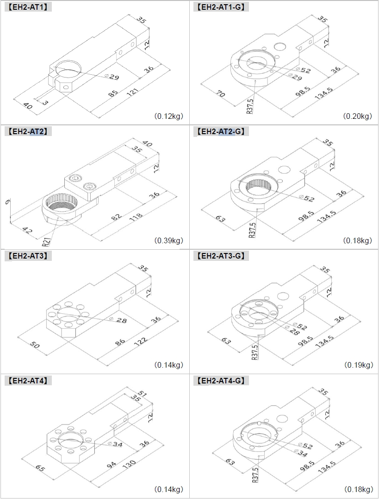

HANDY2000용 트레이서암에 대하여
ESTIC 위치제어 솔루션

이 문서는 ESTIC의 HANDY2000 시리즈 수지식 너트러너 전용 트레이스 제어 시스템에 대한 안내 입니다.
이 시스템의 핵심 목적은 체결 공정에서 작업자의 물리적 부담을 줄이고, 위치 감지 및 순서 제어를 통해 인적 오류를 제거하며, 체결 토크와 좌표 데이터를 연계하여 고차원적인 추적 가능성을 확보하는 것입니다.
위치제어 필요 유무에 따라 다음의 제품을 준비합니다: 트레이서 암 (Tracer Arm)은 물리적 지지 기능과 위치 감지를, 서포트 암 (Support Arm)은 물리적 지지만을, 트레이스 컨트롤 유닛 (TCU)은 위치 정보의 전송을 담당합니다.
1. 시스템 개요 및 목적
트레이서 암 시스템은 핸디 시리즈 전용으로, 체결 공정의 정도와 효율성을 극대화하기 위해 설계되었습니다. 시스템의 근본적인 목적은 두 가지 측면에서 작업 환경을 개선하는 것입니다.
- 물리적 지원: 체결 시 발생하는 반력과 공구의 무게로 인한 작업자의 피로와 부담을 경감시키는 보조 암 역할을 수행합니다.
- 공정 제어 및 추적성: 트레이서 암의 위치 감지 기능을 통해 작업 지시서에 의존하던 체결 순서 및 위치 규정의 인적 오류를 원천적으로 차단합니다.
또한, 각 체결 작업의 토크 데이터를 위치(좌표) 데이터와 직접 연계하여 고차원적인 추적 가능성(Traceability)을 제공함으로써 품질 관리를 강화합니다.
2. 주요 구성 요소
이 시스템은 크게 트레이서 암, 서포트 암, 트레이스 컨트롤 유닛으로 구성되며, 각각의 역할과 사양은 다음과 같습니다.
📍 트레이서 암 (Tracer Arm)
작업자 보조 + 정밀한 위치 감지 (핵심 장치)
- 기능: 공구 무게 및 반력흡수, 각도센서를 이용한 3차원 위치 감지.
- 정밀도: 마이크로용 ±1mm, 그 외 모델 ±3mm.
- 종류: 저토크(TA), 고토크(TH), 수직형(PA), 마이크로용(MTA).
💪 서포트 암 (Support Arm)
물리적 지원 전용 (경제적 대안)
- 기능: 공구 무게 및 반력 지원 기능만 제공.
- 목적: 위치 추적이 불필요한 공정에 적합.
- 종류: 저토크용(SA), 고토크용(SH), 수직형(SPA).
🧠 트레이스 컨트롤 유닛 (TCU)
위치 데이터 처리 (위치제어용 컨트롤러)
- 기능: 트레이서 암의 위치 정보를 HANDY2000 컨트롤러로 전송.
- 틀어진 워크의 위치를 보정가능.
- I/O추가옵션: 표준 6점 입/출력, 옵션 확장 24점 입/출력.
3. 핵심 기능 및 제어 방식
3.1. 트레이스 잡 기능 (Trace Job Function)
일련의 체결 순서를 정의하고 관리하는 핵심 기능입니다. 최대 99개의 Job등록 및 각 Job당 최대 63개의 체결 위치(Position) 설정이 가능합니다.
제어 모드:
- 순서 체결 비활성화 모드: 등록된 위치 내에서 자유로운 체결 허용 (이중 체결 방지).
- 순서 체결 활성화 모드: 설정된 Step 순서를 엄격하게 준수해야만 체결 가능.
3.2. 위치 판정 기능 (Position Judgment Functions)
- 체결 완료 위치 판정: 체결 완료 시점의 위치가 허용 오차 범위 내인지 판정 (와셔 누락, 볼트 길이 오류도 감지가능).
- 체결 중 위치 모니터링: 체결 중 공구가 허용 범위를 벗어나면 즉시 "POSITIONING NG" 오류 발생 및 작업 중단.
3.3. 위치 보정 기능 (Position Correction Function)
작업물의 회전 편차까지 보정하여 불안정한 작업 환경에 대응합니다. (2개의 기준점을 먼저 등록)
- MODE1 (독립 보정): 작업 시작 전, 별도 지정된 2개의 기준점을 측정하여 보정값 계산.
- MODE2 (체결 위치 보정): 트레이스 잡의 첫 번째/두 번째 체결 완료 위치를 기준점으로 자동 보정값 계산 (순서 체결 활성화 모드에서만 사용 가능).
4. 위치제어 시스템 구성 및 설정
4.1. 시스템 구성
트레이서/서포트 암 → TCU → HANDY2000 컨트롤러 순서로 연결됩니다.
설치 시 레졸버 케이블, NET 케이블, TCU 전원 케이블, 마운팅 브라켓, 그리고 통신망 양 끝단의 NET 종단 저항(2개)이 필요합니다.
4.2. 파라미터 설정
HANDY2000 컨트롤러에서 다음의 주요 파라미터를 설정해야 합니다.
① 트레이서 암 설정 (S18):
- TABLE SELECT (사용 암 종류 선택)
- LENGTH 1/2, LENGTH 2 OFFSET (암 본체 라벨의 물리적 길이 입력 필수)
- ARM TYPE (암의 동작 방향 Right/Left 지정)
② 트레이스 잡 설정:
- TRACE JOB LIST (채널 번호, 수평/수직 허용 오차 정의)
- SEQUENCE (순서 체결 활성화/비활성화 모드 선택)
- END POSITION (체결 완료 시 위치 판정 사용 여부)
- CORRECTION (위치 보정 기능 MODE1/MODE2 사용 여부)
4.3. 티칭 (Teaching)
체결할 위치의 좌표를 시스템에 등록하는 과정입니다.
- 다이렉트 티칭: 암을 실제 위치로 이동 후 관리 소프트웨어/패널을 통해 등록.
- 수동 설정: 좌표값을 키보드로 직접 입력.
- 외부 신호 입력: 외부 PLC 등의 신호를 통해 티칭 수행.
5. 안전, 유지보수 및 보증
5.1. 안전상 주의사항
운용시는 하기에 유의해주십시오.
- 본 제품은 방폭 사양이 아닙니다. 가연성/폭발성 환경에서 절대 사용 금지.
- 감전 방지를 위해 반드시 접지해야 합니다.
- 200mm 이상의 비트를 사용시 P07 Drive Control / 6. Drive End Time을 반드시 0 이 아닌 숫자를 넣어야 합니다.
- 체결 시 반력에 의한 암 파손을 방지하기 위해 150mm를 초과하는 소켓 사용을 지양해야 합니다.
5.2. 유지보수 및 예방 보전 (v1.11 지침)
체계적인 예방 보전 지침을 준수하여 장기적인 성능을 확보해야 합니다.
주요 유지보수 항목:
- 가스 스프링 교체: 조정 노브로 보정이 불가능할 경우 교체 (소모품).
- 회전식 그립 윤활: 스위치 동작 불량 시 지정된 윤활유 주입.
예방 보전 주기:
| 주기 | 항목 |
|---|---|
| 시업 점검 (매일) | 부품 파손 여부 등 외관 확인. |
| 정기 점검 (월 1회) | 리졸버 센서의 각도 값 확인 및 정확도 점검. |
| 오버홀 (100만 사이클) | 소모품 (가스 스프링) 교체 권장. |
5.3. 보증 (v1.11 기준)
- 보증 기간: 공장 출하 후 18개월 또는 사용 개시 후 12개월 중 먼저 도래하는 기간 적용.
- 보증 범위: 정상 사용 상태에서 발생한 고장에 대한 무상 수리 제공.
- 보증 제외 항목: 사용자 개조/분해, 천재지변, 소모품 (가스 스프링 등).
6. 툴취부 브라켓
EH2-AT2브라켓의 경우 ENRH-SH01(리액션 플레이트), ENRH-LNM30(락너트)를 포함합니다.

(2025/12/01년 출하기준)